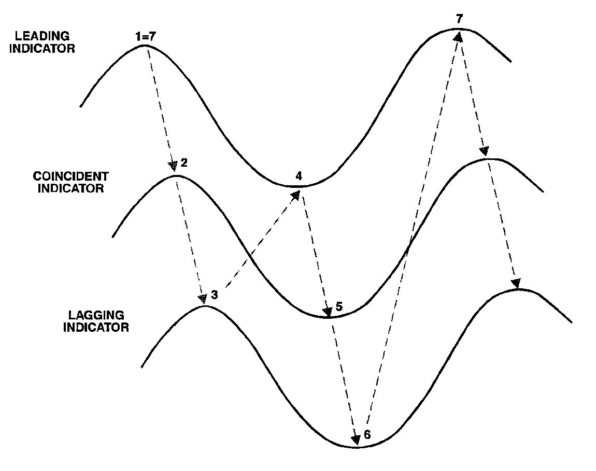
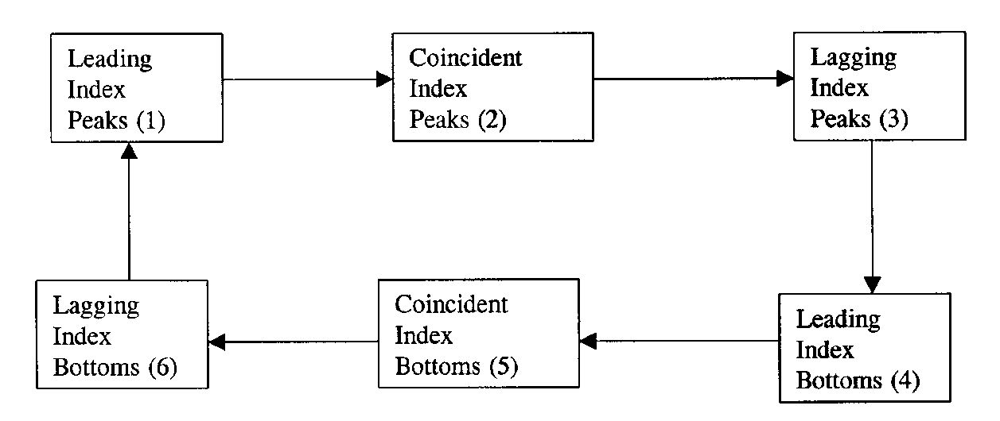
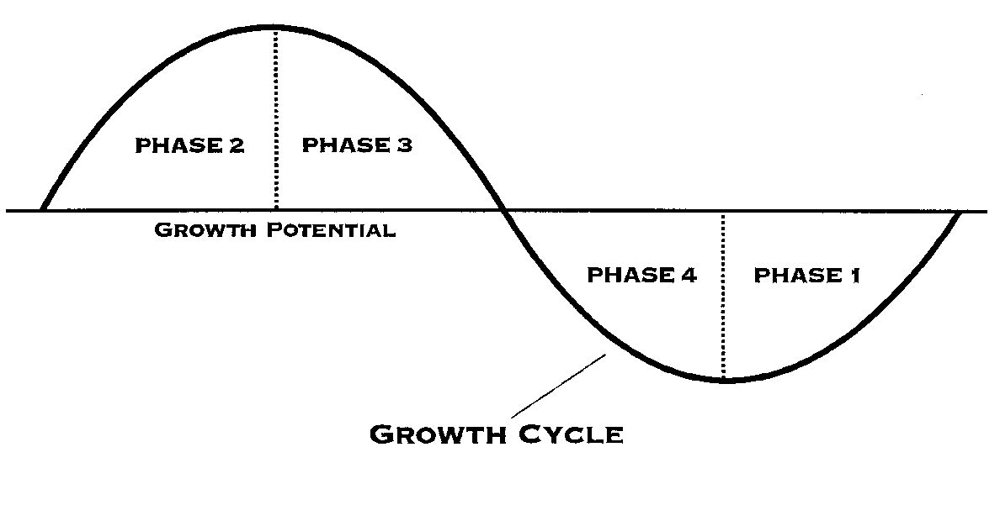
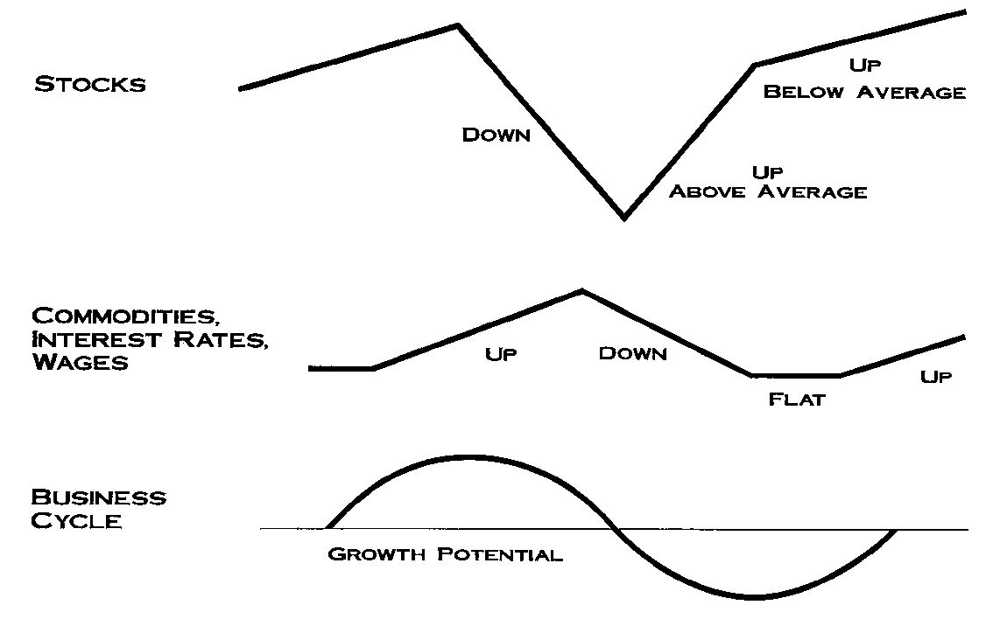

《經濟指標教你加減碼》：景氣循環投資
《經濟指標教你加減碼》 是 Profiting in Bull or Bear Markets 中文版。作者 George Dagnino 將商業循環分為四個階段，根據經濟指標判斷當前景氣所在的位置，進一步作為投資決策的參考。

經濟指標的種類
資產價格會隨著經濟情況波動，投資人若能深入研究經濟情勢，有助於判斷哪些資產最具上漲潛力，哪些資產卻有下跌風險。《經濟指標教你加減碼》一書中，將經濟指標分成六大類，可以看出經濟的六張面貌。
整體經濟活動指標
- 國內生產毛額 (Gross Domestic Product, GDP)
- GDP = 民間消費 + 民間投資 + 政府支出 + (出口 - 進口)
- 國內生產毛額 (Gross Domestic Product, GDP)
消費者活動指標
- 就業成長率：就業成長率上升代表當時經濟非常強勁，消費所得增加，且願意增加支出；就業成長率下降則表示，消費者的支出將因所得成長率降低而縮減，消費態度轉趨保守。
- 失業率：失業率下降，顯示經濟景氣非常好；失業率升高，代表經濟景氣走緩。
- 企業求才廣告指數：企業求才廣告指數下降，代表企業決定減少雇用人數，未來就業率可能因而走低。它是失業率的先行指標。
- 零售業銷售額：零售業銷售額強勁成長，顯示經濟景氣熱絡、就業情況佳，且人們所得增加。此一指標被用來印證當時經濟成長的強度。
- 消費者信心指數：當密西根大學消費者信心指數接近100，表示消費者對目前及未來的景氣看法非常正面，並且願意增加消費；當它降至 80 ~ 90，經濟步入緩慢成長甚或蕭條的可能性非常高。
- 消費者循環信用餘額：消費者循環信用餘額若高度成長，顯示消費者對未來前景感到樂觀，因而願意提高借貸額度，同時經濟成長也將更強勁。
- 個人所得：反映了整體經濟成長或 GDP 的情況。
- 初次請領失業救濟金人數：當請領人數升高，表示經濟正在走緩；請領人數減少，則代表有愈來愈多失業人口已找到工作，景氣已逐漸改善。
生產及資本投資活動指標
- 工業生產指數：當工業生產指數以月增率約 0.3 ~ 0.4% 的速度成長時，顯示製造業景氣非常強勁，表示當時的就業情況、銷售數據與個人所得都非常好，而經濟景氣則欣欣向榮。反之，若工業生產指數走緩，顯示就業情況及個人所得惡化，銷售數據也會受到拖累。
- 每週平均工時：觀察每週平均工時的變化，可推估工業生產指數的未來走向。每週平均工時的變化，是經濟活動的先行指標。
- 每週平均加班時數：每週平均加班時數也被視為經濟活動得先行指標。一旦經濟情況好轉，企業在增加雇員之前，一定會先提高現有員工的加班時數。
- 新增耐久財訂單 及 新增消費品訂單：訂單增加顯示製造業者必須增加產量，以因應升高的需求；倘若訂單減少或成長率趨緩，顯示工廠生產量降低，整體產出亦會隨之降低。
- 未交付生產訂單：如果未交付生產訂單快速增加，廠商可能沒有足夠產能可以提高產量，而必須不斷趕工。因此在這種強況下，經濟景氣可望走高。但相對而言，如果未交付生產訂單減少，廠商會被迫放慢生產速度，以減少產量。
- 供應商交貨指數：代表企業延遲出貨的百分比。當指數上揚，顯示愈來愈多企業有延遲出貨的現象，代表當時製造業者非常忙碌，因生產不及而無法及時出貨，經濟景氣也因而非常強勁。
- 存貨水平：存貨水平升高顯示企業為滿足不斷增加的需求，而加速囤積存貨。
- 存貨銷售比：當該比率維持在穩定的低檔，顯示存貨與銷售量平衡，且經濟情況非常良好。當存貨銷售比下降，顯示銷售成長高於存貨成長，經濟景氣非常熱絡，企業必須加速生產以應付需求。
建築指標
- 新屋開工率 及 建築許可數：當利率持穩或走低，新屋開工率及商業活動都會加溫，整體經濟也會獲得改善；一旦經濟環境中的不確定性升高，加上利率開始走高，消費者及投資者將刪減購屋支出，以及新建案的投資。
- 新屋舊屋銷售數字：反映消費者的購屋意願。透過這項統計可以知道房地產平均售價，並據以推估房地產市場的通膨情況。
通貨膨脹指標
- **消費者物價指數 (Consumer Price Index, CPI)**：最常用來衡量通貨膨脹的指標。
- **商品價格：預測未來通貨膨脹走勢，最具代表性且敏感的指標。所謂商品指的是生產一般物品所需的原物料。
- 薪資：當失業率穩定下降時，薪資成長率通常會升高，顯示人力市場趨於緊縮。
- **生產者物價指數 (Producer Price Index, PPI)**：代表生產及製造業者的訂價能力。生產者物價指數被商業社會及政府單位廣泛利用，主要的用途在於：1、作為經濟指標；2、作為其他經濟指標的平減值；3、作為合約價格調整的基準。
- 全國採購經理人物價指數：當指數超過 50 時，反映的是採購經理人付出較高的價格，顯示通貨膨脹的壓力非常大；而當指數跌破 50 時，顯示通貨膨脹風險已經降低，並逐漸獲得控制。
- 雇用成本指數：反映出企業支付勞工薪資及福利的趨勢，也是衡量勞工成本最全面性的指標。
生產力與獲利能力指標
- 生產力成長率：生產力成長率是是判斷經濟健康與否的關鍵指標。
- 企業獲利：企業獲利也是判斷經濟體質，預測未來景氣走向的重要指標。
經濟指標之間的關係
透過領先、同時及落後指標，投資人可以追蹤商業循環中各個階段的發展，以從中判斷資產的投資風險與機會。
領先指標綜合指數：領先指標綜合指數的主要目的在於預測未來經濟趨勢，指數走緩，顯示未來經濟成長率可能降低；指數上升，顯示經濟成長率未來可能走高。領先指標綜合指數的組成因子有以下幾個：
- 製造業員工平均每週工時
- 初次請領失業救濟金人數
- 製造業新訂單「消費性用品及相關原物料」項目
- 供應商交貨指數
- 製造業新訂單「非國防耐久財」項目
- 建築許可數
- 標準普爾 500 指數
- 貨幣供給額 M2
- 十年期國庫券與聯邦基金之利差
- 密西根大學消費者信心指數之「消費者預期」項目
同時指標綜合指數：同時指標綜合指數提供了目前經濟情勢的資訊，由四項指標綜合估算得來：
- 非農就業人口數
- 個人所得減去移轉性支出
- 工業生產指數
- 製造及貿易銷售值
落後指標綜合指數：落後指標綜合指數由數個指標的平均值組成而成。根據歷史經驗，這些指標的反轉點通常落在同時指標之後。被用來計算落後指標綜合指數的經濟指標如下：
- 平均失業時間
- 製造及貿易業的存貨銷售比
- 製造業單位勞工成本變動率
- 銀行基本放款利率
- 流通在外之商業及工業放款總額
- 消費者循環信用餘額相對個人所得的比率
- 勞務性消費者指數
對於衡量商業循環對金融市場造成的風險變化，落後指標是非常有價值的工具，有助做成投資決策、判斷經濟及金融體質。落後指標的上升被視為領先指標即將下滑的預兆，因此，投資人及企業可以透過觀察落後指標來預測領先指標與景氣即將惡化的時機。

領先、同時及落後指標的先後關係，由圖中可以看出，領先指標的高峰出現在同時指標的高峰之前；同時指標的高峰，則出現在落後指標的高峰之前；落後指標的高峰，緊跟著出現的是領先指標的谷底，之後落後指標的谷底才會出現。

落後指標可以用來預測領先指標趨勢；領先指標可用來預測同時指標趨勢，而同時指標則可以預測落後指標趨勢。
景氣循環四階段
《經濟指標教你加減碼》將商業循環分為四個不同階段，四個不同階段所產生的經濟情勢變化，往往可以左右資產價格及金融市場的方向。

第一階段：商業循環的第一階段，景氣自遠低於成長潛能的低迷困境中逐漸回升。
- 貨幣供給快速升高。
- 貨幣逐漸恢復強勢。
- 股市上漲。
- 經濟成長率走穩，並從疲態中慢慢復原，不過仍低於成長潛能。
- 企業獲利狀況走出谷底。
- 商品價格繼續走低，最終達到谷底。
- 短期利率繼續走低，最終達到谷底。
- 長期利率繼續走低，最終達到谷底。
- 通貨膨脹率繼續走低，最終到達谷底。
第二階段：到了商業循環的第二階段，經濟成長率開始超越成長潛能。
- 貨幣供給持續成長，並達到高峰。
- 美元持續強勢，亦達到高峰。
- 股市持續強勢，亦達到高峰。
- 經濟成長率非常強勁，遠高於成長潛能。
- 企業獲利成長快速。
- 商品價格強勁上揚。
- 短期利率走高。
- 長期利率走高。
- 通貨膨脹走高。
第三階段：經過第二階段的榮景，到了第三階段，經濟成長率又逐漸回到典型的成長潛能區。
- 貨幣供給持續走低。
- 美元相對疲弱。
- 股市低迷。
- 經濟成長率持續趨緩，並跌破長期成長潛能。
- 企業獲利達高峰後開始下降。
- 商品價格達高峰後開始下降。
- 短期利率達高峰，並開始下降。
- 長期利率達高峰，並開始下降。
- 通貨膨脹持續走高，並開始下降。
第四階段：到了第四階段，經濟成長率又再度滑弱至成長潛能以下。
- 貨幣供給持續走低，不過當短期利率達到高峰後，亦逐漸回升。
- 美元最終又恢復強勢。
- 股市維持一段時間的弱勢後，終於開始回升。
- 經濟成長率持續趨緩。
- 企業獲利依舊不佳。
- 商品價格偏低。
- 短期利率下降。
- 長期利率下降。
- 通貨膨脹下降。
股票市場與景氣循環
股票市場表現與其他經濟現象間存在之關聯，包括經濟循環以及商品價格與利率趨勢。經濟表現強勁時，商品價格與利率通常也處在上升走勢，股票則呈現弱勢；反之，當經濟活動趨緩，商品價格與利率下滑，股票市場的表現通常最理想。

評估股票市場的風險之所以難，不在於無法及時取得經濟或金融資訊，而是出在人們做決策時後受情緒左右。以下 11 項參考準則，能夠協助投資人回答一個問題：現在是否可以把資金投入股票市場了？一旦有愈多指標顯示，現在把資金投入股票市場的風險很大，投資人就應該考慮把愈多比例的資金轉到貨幣市場工具。
本書這座認為，只有下列情況之下，才可以把持股比例調高為 100%：
- 經濟狀況轉弱。
- 貨幣供給成長快速。
- 短期利率下跌或維持穩定。
- 商品價格下跌或維持穩定。
- 通貨膨脹與債券殖利率下跌或維持穩定。
- 觀察債券殖利率與股票本益比的歷史關係，目前市場本益比顯示的股票價格處於低估狀況。
- 殖利率曲線形狀愈來愈陡峭。
- 美元展現強勢。
- 公用事業類股處於漲勢。
- 股票成交量擴大。
- 股票市場價格波動程度下降或處於偏低水準。
反之，如果發生下列狀況，股票投資人應該減碼：
- 經濟狀況轉強。
- 貨幣供給成長減緩。
- 短期利率出現 2、3 個月的上漲走勢。
- 商品價格走高。
- 單位勞工成本增加，通貨膨脹壓力轉強，商品價格走高，油價上漲。
- 觀察債券殖利率與股票本益比的歷史關係，目前市場本益比顯示的股票價格處於高估狀態。
- 殖利率曲線形狀愈來愈平坦。
- 美元展現弱勢。
- 公用事業類股處於跌勢。
- 股票成交量萎縮。
- 股票市場價格波動程度增加或處於偏高水準。
景氣循環投資
第一階段：著手建立持股
- 行情持續幾個月的跌勢或狹幅盤整。
- 經濟狀況在幾年的強勁成長之後逐漸趨緩。
- 經過一年以上的緩慢成長之後，貨幣供給開始加速成長。
- 短期利率持續上升超過 12 個月而開始下降。
- 持續一年以上的走高趨勢之後，通貨膨脹與債券殖利率都呈現下降走勢。
- 經過一年以上的漲勢之後，商品價格上漲壓力開始舒緩。
- 流動性增加。市場參與者察覺到新的機會，成交量開始顯著增加。
- 由於通膨壓力減緩，經濟狀況預期好轉，美元走勢轉強。
- 相對於過去幾個月以來的狀況，股票價值衡量指標的讀數趨於合理。
第二階段：持股比例提到最高水準
- 經濟景氣見底復甦，成長速度轉快。
- 隨著景氣狀況好轉，為了進行新投資或購買產品，企業界與消費者的信用需求也提高，貨幣供給成長速度持續上升。
- 短期利率繼續下跌，直到經濟狀況逐漸出現過熱的徵兆之後，利率走勢才止跌回穩。
- 通貨膨脹與債券殖利率持續下降，直到投資需求顯著上升之後才回穩。
- 商品價格持續下跌，直到經濟景氣明顯好轉、原料需求顯著上升之後才止跌回穩。
- 股票成交量持續放大。
- 美元走勢繼續維持強勢，反映美國經濟狀況好轉，通貨膨脹壓力舒緩。
- 衡量股票價值的指標讀數還維持在歷史水準之內，沒有發生顯著高估的現象。
第三階段：汰弱留強，提高現金比率
- 經濟成長步調急速加快。
- 由於信用需求減少，貨幣供給成長速度開始減緩。
- 短期利率見底回升，至少連續上升兩個月，聯邦儲備銀行公開表示經濟發展可能過熱。
- 隨著物價上漲壓力增強，油價上漲，勞工市場緊繃造成工資上揚，通貨膨脹與債券殖利率也開始上升。
- 主要商品指數快速上升。
- 股票成交量開始下降。
- 美元走勢轉弱，反映通貨膨脹威脅增強。
- 衡量股票價值的指標讀數逼近歷史最高水準。
結語
經濟環境和景氣循環週期息息相關，《經濟指標教你加減碼》提供了一套方法，透過領先、同時和落後指標，追蹤到商業循環中各階段的發展，推敲目前處在哪個位置，進一步作爲投資決策的參考。
經濟活動就是人的行為，商業循環的變化，其實發生在我們生活的每一天。幸運的是，我們目前處在資訊發達、資料容易取得的年代，觀察總體經濟與金融市場的變化，不應該只是經濟學家們的工作內容，每個人都可以分析蒐集到的資訊並加以研判，以評估當時市場的風險程度是否持續升高，或是處於低檔，根據不同的階段，擬定適合的投資策略。
投資沒有簡單的公式可循，如果有，每個人都可以成為大富翁，而世界上也就不會只有一個巴菲特。想要精準地抓出經濟景氣所在的位置，並不是一件簡單的事情。但無論如何，《經濟指標教你加減碼》確實提供了一套投資分析基礎，幫助投資人思考如管理自己的基金，在瞬息萬變的市場中，評估風險，擬定適當的投資決策。